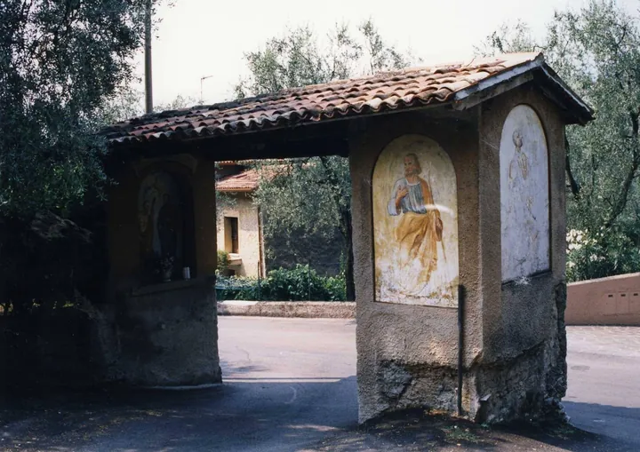

da mer 19 ago a mer 21 ott
Camminata tra gli olivi e capitelli votivi
Esperienza con Guida Ambientale – Tra gli Olivi e i Capitelli Votivi
 Indicazioni
Indicazioni
- Costi e prenotazioni
- Costo non indicato · Prenotazione non indicata
- Programma
- Programma da verificare. Apri la fonte ufficiale per orari e possibili aggiornamenti.
- In caso di maltempo
- Nessuna indicazione specifica pubblicata.
- Note
- Acquisito automaticamente dalla fonte.
L’EVENTO
Descrizione completa
Esperienza con Guida Ambientale – Tra gli Olivi e i Capitelli Votivi
Scopri un volto autentico di Malcesine con una piacevole passeggiata guidata tra gli antichi oliveti e i caratteristici capitelli votivi che raccontano la storia, la cultura e le tradizioni del territorio.
Accompagnati da una guida ambientale, percorrerai un itinerario panoramico di circa 4 km , immerso nel paesaggio mediterraneo del Lago di Garda. Durante il percorso scoprirai la storia della coltivazione dell'olivo, le peculiarità dell'ambiente locale e il significato dei piccoli capitelli votivi disseminati lungo i sentieri.
L'escursione ha una durata di circa 1 ora e 45 minuti , con un dislivello positivo di 240 metri , ed è adatta a tutti. Non sono richieste particolari abilità escursionistiche.
Informazioni utili
Lingue: italiano e inglese
Parcheggio e punto di partenza/arrivo: ufficio IAT (in alternativa: stazione intermedia (San Michele) della Cabinovia-Parcheggio nord
Lunghezza: circa 4 km
Dislivello: +240 m
Difficoltà: facile, adatta a tutti
Cani: ammessi solo se tenuti al guinzaglio
Passeggini: non consentiti
Abbigliamento e attrezzatura consigliati
Scarpe chiuse con suola scolpita
Acqua
Cappello
Crema solare
K-way
Quota di partecipazione
Adulti: € 8,00
Ragazzi fino a 18 anni: € 4,00
Prenotazione obbligatoria entro le ore 12:00 del mercoledì precedente l'esperienza.
Per informazioni e prenotazioni: Ufficio IAT presso la stazione degli autobus
IL PROGRAMMA
Programma e orari
Appuntamenti raccolti dalle fonti elencate. Dove manca un orario, non è ancora disponibile in questa scheda.
Programma pubblicato
- 2026-08-19 — 2026-08-19 · 17:00:00
- 2026-09-09 — 2026-09-09 · 17:00:00
- 2026-09-16 — 2026-09-16 · 17:00:00
- 2026-09-23 — 2026-09-23 · 17:00:00
- 2026-10-07 — 2026-10-07 · 17:00:00
- 2026-10-21 — 2026-10-21 · 17:00:00
INFORMAZIONI UTILI
Prima di partire
- Controllare la fonte prima di partire.
ORGANIZZAZIONE